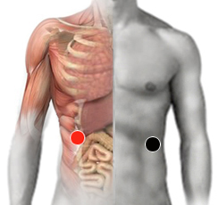

Botulismo
Par
cola de páncreas - hígado

Generalidades:
Botulismo, problemas intestinales, dolor muscular, cólicos y gases. Puede crear metástasis, pólipos intestinales, diarrea, tiene la particularidad de destruir la insulina, por los que se asocia a los pares de la diabetes, puede afectar la vista. Puede provocar Hepatitis H.
Transmisión
Esta bacteria prolifera en cualquier ambiente. Sobre todo se encuentra en alimentos enlatados cuando no llevan un buen proceso de pasteurización.
Es menos frecuente contraer la enfermedad por heridas abiertas.